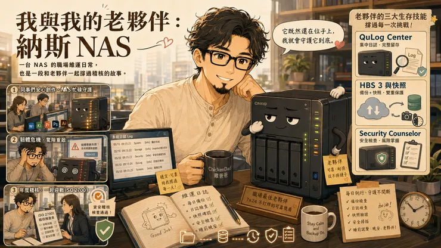

剛轉調來這個部門的時候，是完全不認識納斯的，但因為負責要管理 "霹恩艾斯"，主管大概是怕我覺得無聊，順手就把"納斯"也一起介紹給我。當時還不知道，其實"納斯"跟辦公室大部分的同仁都不熟...也沒有辦法跟他們溝通...

納斯的日常：消化不良的工具人
老夥伴納斯：每天早上八點，辦公室同仁打開電腦就「直接進它的肚子裡編輯檔案」。 不知道該形容它像便利貼還是垃圾桶，無論是幾百 MB 的簡報還是超大 Excel 都是「啪」一聲直接改。
看著它面板上的 LED 燈瘋狂閃爍，同仁都只跟我說，納斯不知道是不是太老了，還是消化不太好、轉好久、速度好慢喔。我只能跟同仁們笑笑，因為他們跟納斯都不熟，也沒有共同的語言溝通。不過它年紀真的很大了，我也在心裡默默改口叫他「老納」。
差點被裁掉的「老納」
老納雖然穩重，但也有鬧脾氣的時候。
今年韌體更新出了點小插曲，剛好遇到我休假。老納整天身體不舒服，一下「逼逼叫」鬧情緒重開機，一下又冷戰連不到電腦。那幾天辦公室哀鴻遍野，老納差點被我們協理一氣之下「裁掉」。
還好，我回來後及時幫他進行了「插管急救」，老納這才緩過氣來，重新活了下來。
每年六月遠房親戚幫他進行健康檢查
老納平時的身體狀況算勇健，但每年六月的時候，都固定要進行幾場「健康檢查」。SGS和政府機關的資安稽核，像極過年時那群熱情的親戚一樣，帶著辛辣的問題準時報到：
- 「如果納斯明天沒辦法上班，你多久能讓它恢復？」
- 「納斯知不知道哪些個資？會不會有外洩風險？」
- 「有沒有納斯的定期檢查報告？軟體、韌體有沒有更新？」
- 「...還有，納斯戴的手錶時間準不準？」
每當這時，我都默默地在心裡幫老納加油：「ISO 27001 證書續證就看你了，撐住啊！」
不怕！老納有三大生存神技
雖然老納年紀大，但它記憶力驚人且配合度極高。面對這些遠房親戚們的連珠炮，老納總能拿出它的家當來應戰：
- QuLog Center：吃了誠實豆沙包的紀錄員當稽核問起：「誰點了有毒連結？誰下載了個資？」 老納會立刻吐出完美的 Log 紀錄，證明我們有在認真監視，誰也別想賴帳。
- HBS 3 與快照：時空旅人的自動存檔當被問到：「中了勒索軟體怎麼辦？資料燒掉怎麼辦？」 老納展示的備份與定時快照，就像是遊戲裡的「自動存檔點」，即便現實崩塌，我們也能在異地辦公室滿血復活。
- Security Counselor：專業的守門警衛面對政府要求的弱點掃描與健檢，老納會收起平常的慵懶，換上西裝展現一百分的資安標準：「別看我平時只是個管檔案的，我也是很有原則的。」
結語：當一天和尚，敲一天鐘
今年六月又到了。那些「ISO 27001 的親戚們」已經在路上了。
這幾天，我順手幫老納換了一台全新的備份磁碟機，仔細檢查了 Log、快照和防毒設定，順便幫老納的風扇吹吹灰塵，讓他涼爽一點。
雖然現在公司很多資料都上雲端了，老納的地位漸漸不如以往，但「當一天和尚，敲一天鐘」，它既然還在位子上，我就會守護它到底。
「老納，今年也要一起加油喔！」